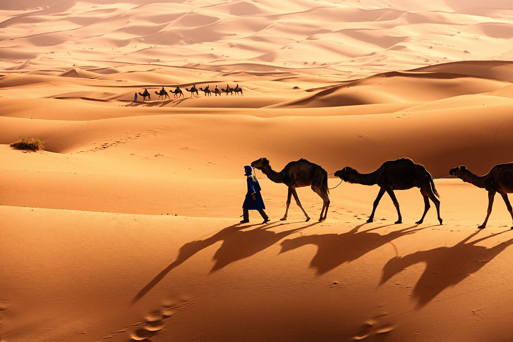
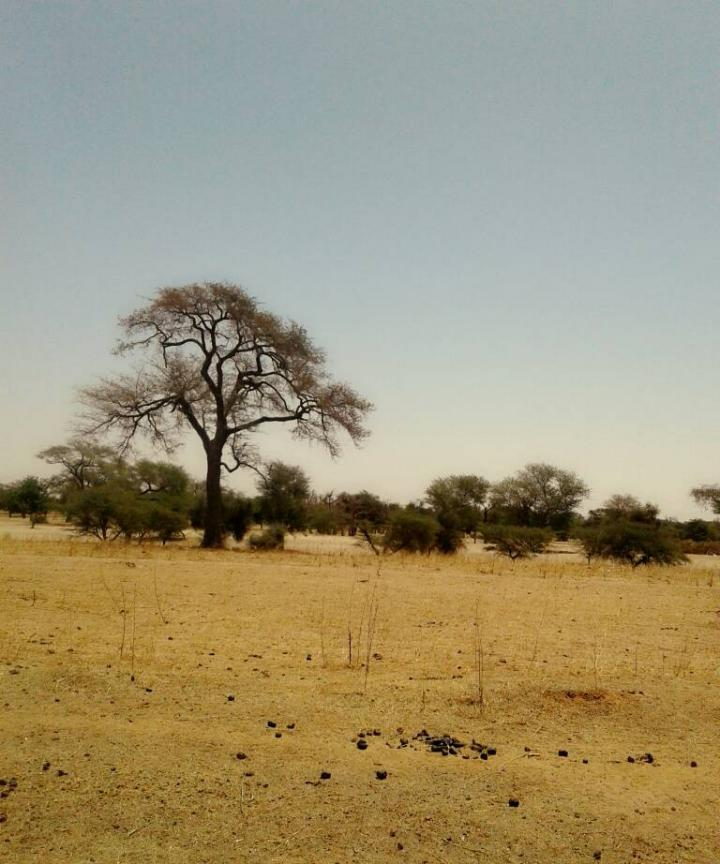

Photo gallery
2020.09.23 19:52





- Descrierea desertului Sahara - Travelers-way.com
Desert caracteristici. Desertul este un fenomen natural unic. Călătorii pot viziona dune uriașe în mișcare. Din cauza vânturilor, nisipurile se mișcă chiar în fața ochilor noștri. Și în Sahara, vântul suflă în fiecare zi. Acest lucru se datorează suprafeței relativ plane. - Sahara, cel mai mare desert | AniDeȘcoală.ro
Ain Sefra este cunoscut ca fiind poarta de intrare in desertul Sahara, unde temperaturile ating in mod obisnuit 35 de grade Celsius in lunile iulie si august. Conditiile de inghet nu sunt insa neobisnuite in aceasta regiune care se intinde intre desert si muntii Atlas. A mai nins in zona si in decembrie 2016, pentru prima data dupa multi ani. - Animalele din deșert - Animale - 2020
si valea fluviului Niger la sud. Sahara este împartita în Sahara de vest, centrala Ahaggar Muntii, Muntii Tibesti, Muntii Air (o regiune de desert muntoasa cu platouri mari), desertul Tenere si desertul libian (regiunea cea mai arida). Cel mai înalt vârf din Sahara este Emi Koussi (3415 m/11, 204 ft) în Munsii Tibesti, în nordul Ciadului. - Deşertul Sahara - masterprof.ro
Sahara Desert Luxury Camp, Merzouga – Rezervați cu Garanția Celui Mai Bun Preț! 254 comentarii și 45 fotografii așteaptă pe Booking.com. - Excursie în Sahara (partea I) | Lasam Urme
Sahara, cel mai mare desert 4. ACTUALIZAT DE AniDeScoala.ro PE 26 februarie 2015. Like (146) Dislike (14) Sahara, cel mai mare deşert, are o suprafaţă de 8 800 000 km2 (după alte surse 8 400 000 km2 sau 9 065 000 km2) – mai mare decât întreg continentul australian şi cu ceva mai mic decât Europa. Ocupă o treime din suprafaţa ... - Desertul - Ce plante traiesc? | Marea Carte: Întrebări şi ...
Sahara cu cele 9.000.000 km² este deşertul cel mai mare de pe Pământ. Ea cuprinde o treime din Africa, aproximativ suprafaţa Statelor Unite ale Americii, sau de 26 ori mai mare decât suprafaţa Germaniei. Acest deșert uscat se întinde de la ţărmul Oceanului Atlantic până laMarea Roşie alcătuind un trapez cu o lăţime în vest de ... - VIDEO Algeria: A nins in desertul Sahara - International ...
Este a patra oară când se întâmplă acest fenoment, în zonă, în ultimii 37 de ani, scrie Euronews. Orașul Ain Sefra din Algeria este cunoscut ca poartă de intrare în Sahara, cel mai fierbinte deșert di - A NINS în deșertul SAHARA! Imagini incredibile ...
Mască individulă la preț de producător - 3,5 RON(inclusivTVA) - Click AICI Deşertul nu e o zona propice vietii. Cu toate acestea exista plante ce s-au adaptat conditiilor aprige. În deşert plantele trebuie să supravieţuiască perioade lungi fără apă. - Sahara Olteniei, deșertul apărut pe 100.000 de hectare în ...
Excursie în deșertul Sahara – de la munții Atlas la Valea Dades Lăsând în urmă oceanul, am ajuns în Marrakesh și ne-am pregătit pentru o nouă aventură: excursia din deșertul Sahara. Excursia am achiziționat-o cu 2 luni înainte de pe internet prin Mouhou Tours pe care îi găsiți aici.După lungi căutări, am hotărât să mergem cu ei, deoarece au fost singurii care ne-au ... - Sahara a devenit desert dupa o lunga tranzitie - Descopera.ro
Întinsă pe 6% din suprafața județului Dolj, pe o suprafață de cel puțin 100.000 de hectare, zona supranumită „Sahara României” este imaginea perfectă pentru pericolele care ne pasc dacă continuăm să defrișăm la întâmplare.